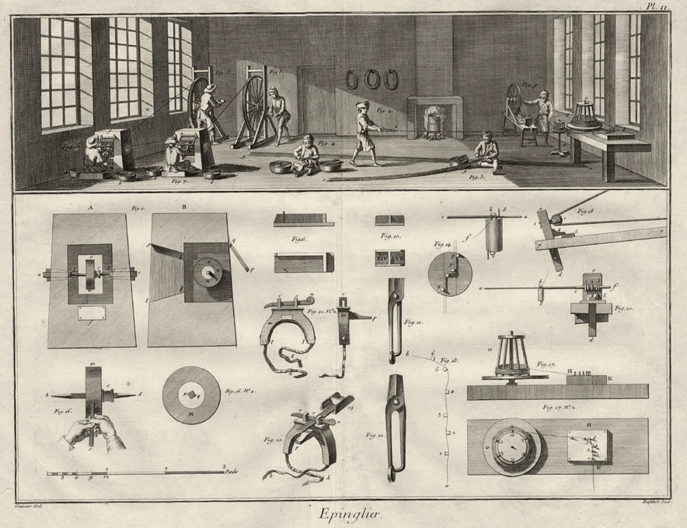

· Edición 81 · 4 min de lectura
Solo 7 de cada 100 pesos de crecimiento salieron de producir mejor

Solo 7 de cada 100 pesos de crecimiento salieron de producir mejor
En pocas palabras. Por qué en Colombia se trabaja tanto y se gana tan poco? Entre enero y septiembre, de cada 100 pesos que creció la economía, solo unos 7 salieron de producir mejor; el resto, de sumar trabajo y máquinas. Sin eso los sueldos no suben por mucho tiempo, y Colombia ya probó una salida barata: asesorar fábricas en grupo.
El dato curioso. En 1776, Adam Smith abrió La riqueza de las naciones con una fábrica de alfileres. Un hombre solo, escribió, no haría veinte al día. Diez obreros que se reparten las tareas sacaban más de 48.000. Lo curioso: Smith armó el ejemplo con textos franceses, entre ellos la Enciclopedia de Diderot, según el historiador Jean-Louis Peaucelle. Una lámina de esa enciclopedia abre esta edición.
¿Qué pasa? El miércoles, el DANE publicó uno de los datos que Gobierno, empresarios y centrales obreras usan para negociar el salario mínimo de 2027: cuánto creció la economía por producir mejor.
Piense en una cocina. Más cocineros y más ollas sacan más almuerzos. Una receta mejor y la cocina ordenada sacan más con lo mismo. Eso último es la productividad total.
La economía creció 2,07%: más trabajo aportó 1,07 puntos; más máquinas y equipos, 0,84; hacer mejor las cosas, apenas 0,15.
Colombia está entre los países de la OCDE, un club de 38 países, que más horas trabajan, y es el último en lo que produce por hora: unos 21 dólares, frente a 71 del promedio.
¿Y en 10 a 50 años? La productividad total es casi la misma de hace 70 años, según el Centro Javeriano de Competitividad; con 1% de mejora anual, los ingresos serían el doble. Y como la fuerza de trabajo crecerá cada vez menos, el crecimiento tendrá que salir de producir mejor, advierte el Consejo Privado de Competitividad.
¿Por qué pasa?
- Empresas que no crecen. En Estados Unidos, la mayoría de las empresas nuevas cierra y unas pocas se disparan; en Colombia abundan las fábricas pequeñas y viejas que no crecen, según un estudio publicado en 2022. Es la tienda con el mismo mostrador por treinta años.
- Informalidad. Casi 55 de cada 100 ocupados son informales, según el DANE, y un negocio informal rara vez consigue crédito para crecer. (Conocimiento general.)
- Gerencia a ojo. En India, fábricas textiles grandes no llevaban control de calidad ni de inventarios porque no sabían cuánto ganarían, según los autores del estudio de abajo.
¿Alguien lo ha resuelto? En India, fábricas escogidas por sorteo recibieron asesoría gratis en gerencia: calidad, inventarios, orden. Su productividad subió 17% en un año frente a las demás, según un ensayo aleatorizado publicado en 2013.
Colombia hizo su prueba en 2012 con 159 fábricas de autopartes: por sorteo, unas recibieron asesoría individual y otras, en grupos pequeños, como se hace con los agricultores. La grupal costaba un tercio, unos 10.000 dólares por empresa, y subió más las ventas, las ganancias y la productividad, según economistas del Banco Mundial.
Pero ojo.
- Medirse a sí mismo. El programa público Fábricas de Productividad reporta mejoras de 33,8%, pero lo mide el propio Ministerio de Comercio, sin grupo de comparación.
- Producir no es repartir. Que cada hora rinda más no garantiza un mejor sueldo. (Conocimiento general.)
Lo que ya habíamos contado. El 1 de octubre contamos que más de la mitad de quienes trabajan son informales (ver esa edición): es parte de esta historia.
Qué hacer con esto
Para ir pensando. En un negocio, la mejora más barata suele ser ordenar (inventarios, calidad, metas), no alargar la jornada.
Cómo prepararse. Colombia Productiva, del Ministerio de Comercio, abre convocatorias de asesoría para pymes; vale la pena revisarlas.
Ojo con el cuento. Si le dicen que la economía creció, pregunte de dónde: de más gente y máquinas, o de que cada hora rinda más. Solo lo segundo sostiene los sueldos.
Dos lecturas
Las dos posturas sobre el tema, en su mejor versión
Que el mínimo siga a la productividad. Si el salario mínimo sube mucho más de lo que rinde cada hora, los negocios pequeños no pueden pagarlo y contratan por fuera de las reglas. Atarlo a la inflación más la productividad protege el empleo formal que ya existe.
Que el mínimo empuje la productividad. Un piso más alto obliga a las empresas a organizarse e invertir en vez de competir con sueldos bajos. Y con una productividad tan quieta, usarla como techo congelaría salarios que ya alcanzan para poco.
Quién decide y cuándo
Quién decide. El mínimo de 2027 lo negocian Gobierno, gremios y centrales obreras en la Comisión Permanente de Concertación; sin acuerdo, lo fija el Gobierno por decreto.
Cuándo. Por ley, hay plazo hasta el 15 de diciembre para el acuerdo y hasta el 30 para el decreto, que debe tener en cuenta la productividad.
Cómo participar. El ciudadano no tiene silla en esa mesa; puede preguntarle a su gremio o sindicato qué cifra lleva.
La paradoja del día
Lo más absurdo de la edición, en dos líneas
Colombia está entre los países de la OCDE que más horas trabajan y es el último en lo que produce cada hora. Si la riqueza se midiera en madrugadas, seríamos potencia.
Para conversar
La pregunta. En su trabajo, ¿qué haría rendir más una hora: otra máquina, otra forma de organizarse o menos trámites?
Para leer más
Libros para seguir con el tema
Por qué fracasan los países, de Daron Acemoglu y James A. Robinson (Deusto, 2012; traducción de Marta García Madera). Dos economistas explican por qué unos países prosperan y otros no, y ponen el peso en las reglas que premian o castigan a quien produce mejor.
La riqueza de las naciones, de Adam Smith (Alianza Editorial, 1994; traducción y estudio preliminar de Carlos Rodríguez Braun). El libro de la fábrica de alfileres. El original en inglés, de 1776, es de dominio público y se puede leer gratis en internet.
¿Le interesa ver las fuentes?
Todos los documentos y datos que usamos
26 fuentes: 6 académicas, 5 oficiales, 2 de datos, 2 de organizaciones, 8 de prensa, 3 de referencia.
- Prensa Portafolio (25 de noviembre de 2026), con datos del DANE. Productividad, dato clave en la negociación del salario mínimo, aportó solo 0,15% al crecimiento de 2,07% en 2026
- Prensa La República (25 de noviembre de 2026), con datos del DANE. La productividad total de los factores llegó a 0,15% para el tercer trimestre del año
- Prensa Infobae (26 de noviembre de 2026). Salario mínimo de 2027: el Dane reveló el dato de productividad laboral, clave para el aumento que pedirán empresas y trabajadores
- Datos DANE. Productividad total de los factores (PTF): series históricas
- Prensa Portafolio (noviembre de 2026). Salario mínimo de 2027: Gobierno fija fechas y pone el 15 de diciembre como primer plazo para lograr un acuerdo
- Prensa Noticias RCN (noviembre de 2026). Ya hay fecha para la instalación de la mesa de concertación del salario mínimo 2027
- Oficial Función Pública, Gestor Normativo. Ley 278 de 1996: Comisión Permanente de Concertación de Políticas Salariales y Laborales
- Oficial Corte Constitucional (20 de octubre de 1999). Sentencia C-815 de 1999, sobre el artículo 8 de la Ley 278 de 1996
- Prensa La República (16 de julio de 2026), con datos de la OCDE. Colombia es quinto en horas trabajadas en la OCDE pero es el menos productivo
- Prensa Portafolio, con datos del Compendio de Indicadores de Productividad de la OCDE. Colombia aún es uno de los países donde más se trabaja en el mundo
- Académica Pontificia Universidad Javeriana, Centro Javeriano de Competitividad (febrero de 2026). Monitor de la Productividad n.º 01
- Organización Consejo Privado de Competitividad (2026). Informe Nacional de Competitividad 2026-2027
- Prensa Forbes Colombia (2026), sobre el Informe Nacional de Competitividad. «El IVA hay que tocarlo»: la propuesta del CPC para enfrentar el ajuste fiscal
- Datos DANE, boletín técnico (13 de noviembre de 2026). Empleo informal y seguridad social, trimestre julio a septiembre de 2026
- Académica Eslava, Haltiwanger y Pinzón, Economica (2022), vol. 89, n.º 355, en RePEc. Job Creation in Colombia Versus the USA: 'Up-or-out Dynamics' Meet 'The Life Cycle of Plants'
- Académica Bloom, Eifert, Mahajan, McKenzie y Roberts, Quarterly Journal of Economics (2013), vol. 128, n.º 1. Does Management Matter? Evidence from India
- Académica Bloom y otros, documento de trabajo 16658 del NBER (2011). Does Management Matter? Evidence from India
- Académica Iacovone, Maloney y McKenzie, Review of Economic Studies (2022), vol. 89, n.º 1, en RePEc. Improving Management with Individual and Group-Based Consulting: Results from a Randomized Experiment in Colombia
- Organización Banco Mundial, blog Development Impact. One-on-one or small group-based consulting: which does better at improving firm performance?
- Oficial Ministerio de Comercio, Industria y Turismo (20 de junio de 2024). Análisis del impacto de Fábricas de Productividad en la empresa colombiana
- Oficial Función Pública, Gestor Normativo. Ley 2101 de 2021: reducción gradual de la jornada laboral a 42 horas semanales
- Oficial Ministerio de Comercio, Industria y Turismo (23 de octubre de 2025). Gobierno ha impulsado la productividad de mipymes
- Referencia Adam Smith, La riqueza de las naciones (1776), libro I, capítulo 1, en Standard Ebooks. The Wealth of Nations, Book I, Chapter 1: Of the Division of Labour
- Académica Jean-Louis Peaucelle, European Journal of the History of Economic Thought (2006), vol. 13, n.º 4, en RePEc. Adam Smith's use of multiple references for his pin making example
- Referencia Planeta de Libros (ficha del libro). Por qué fracasan los países, de Daron Acemoglu y James A. Robinson (Deusto, 2012; traducción de Marta García Madera)
- Referencia Biblioteca de la Universidad Texas A&M (ficha de catálogo). La riqueza de las naciones, de Adam Smith (Alianza Editorial, 1994; traducción y estudio preliminar de Carlos Rodríguez Braun)
Glosario
Las palabras técnicas, explicadas
- Productividad laboral: cuánto se produce por cada hora trabajada o por cada persona ocupada.
- Productividad total de los factores: la parte del crecimiento que no se explica por poner más trabajo ni más máquinas; lo que se gana por hacer mejor las cosas. Se calcula restando, por eso es un residuo.
- Valor agregado: lo que una economía produce, descontando lo que gastó en insumos. Es casi lo mismo que el PIB.
- Informalidad: trabajar por fuera del empleo formal, el que tiene contrato y aportes a salud y pensión.
- Comisión Permanente de Concertación: la mesa donde Gobierno, gremios y centrales obreras negocian cada año el salario mínimo.
- Ensayo aleatorizado: un experimento en el que un sorteo decide quién recibe el programa y quién no, para comparar grupos parecidos.
- OCDE: la Organización para la Cooperación y el Desarrollo Económicos, un club de 38 países, Colombia entre ellos, que compara políticas y datos.
Nota metodológica
Cómo se hizo esta edición y qué no pudimos verificar
El horizonte. ¿Cambia el rumbo de cómo vive la gente, en Colombia o en el mundo, dentro de 10 a 50 años? Sí. Según el Centro Javeriano de Competitividad, la productividad total del país es casi la misma de hace 70 años, y con 1% de mejora al año los ingresos serían el doble. Como la fuerza de trabajo ya no crecerá como antes, el Consejo Privado de Competitividad advierte que el crecimiento de las próximas décadas dependerá de producir mejor y de invertir.
El filtro. Es un nudo y cumple las cuatro condiciones: persiste (siete décadas de estancamiento, y 0,15 puntos de 2,07 en 2026); tiene un mecanismo (empresas que no crecen, informalidad y gerencia sin métodos); alguien lo puede cambiar (el Gobierno con sus programas, las empresas, el Congreso con las reglas de formalización); y causa daño comprobable (ingresos que, con 1% al año de mejora, serían el doble). La puerta de entrada es el dato del DANE del 25 de noviembre, que llega a la mesa del salario mínimo. El 24 de noviembre descartamos el estudio de la OCDE sobre Colombia porque no había un hecho nuevo y le dimos horizonte 2; el dato del DANE es ese hecho, y el monitor de la Javeriana nos convenció de que el horizonte es 3.
La mezcla de la semana. El lunes y el martes fueron nudos; el miércoles, un cambio de fondo que también fue tema del mundo. Hoy es el tercer nudo, el máximo. Faltan un avance y un tema de ciencia o tecnología: ninguno de los candidatos de hoy pasaba el horizonte, y el sábado es el día de la ciencia.
Puntaje. De 1 a 3 en cada criterio; peso en la vida y horizonte valen doble (máximo 24). Solo entra un tema con horizonte 3.
| Tema | Puerta | ¿Cambia el rumbo en 10 a 50 años? | Alcance | Peso | Horizonte | Cercanía | Margen | Mirada | Total | Resultado |
|---|---|---|---|---|---|---|---|---|---|---|
| Productividad estancada | nudo | Sí: decide cuánto podrá ganar el país en 2050 | 3 | 3 | 3 | 3 | 2 | 2 | 22 | Elegido (edición 81) |
| Inversión en transporte (CCI) | nudo | Sí | 3 | 2 | 3 | 3 | 2 | 2 | 20 | No pasa el filtro: el daño solo lo cifra el gremio |
| Metro de Bogotá | fondo | Sí: una línea de metro dura un siglo | 3 | 2 | 3 | 3 | 2 | 1 | 19 | Ya está en todas las portadas; sin hito nuevo |
| Canal del Dique | nudo | A medias: una región | 2 | 2 | 2 | 3 | 3 | 2 | 18 | Horizonte 2 |
| Precio de la vivienda nueva | contexto | No | 3 | 2 | 1 | 3 | 1 | 1 | 14 | Coyuntura |
| Sonda Hera en el asteroide Dimorphos (mundo, ciencia) | avance | A medias | 1 | 1 | 2 | 1 | 1 | 2 | 11 | Sin canal hacia Colombia |
| Ley europea de computación cuántica (mundo) | contexto | A medias | 1 | 1 | 2 | 1 | 1 | 2 | 11 | Sin canal hacia Colombia |
En el tema elegido, el margen vale 2: la mesa del salario mínimo usa la cifra este mes, pero la productividad no depende de una decisión con fecha. La mirada vale 2: la prensa cuenta el dato como insumo del mínimo; casi nadie lo cruza con la serie larga y con los experimentos que funcionaron. Ningún otro tema pasa filtro y umbral de 19, así que hoy hay una sola edición.
Hicimos unas 40 búsquedas en español e inglés. No pudimos abrir los documentos completos: ni el boletín del DANE, ni los estudios, ni el informe del Consejo Privado de Competitividad. Trabajamos con resúmenes, fichas y resultados de búsqueda, y no les atribuimos más de lo que dicen. De 26 fuentes, 18 no son de prensa (tres son fichas o textos de referencia).
Quedó sin verificar o con límites:
- El dato del DANE. Las cifras (2,07%, 1,07, 0,84 y 0,15 puntos) son preliminares y las leímos en Portafolio, La República e Infobae, que coinciden; no vimos el boletín. Algunos medios dicen «tercer trimestre», pero es el acumulado de enero a septiembre. «7 de cada 100» es nuestra cuenta (0,15 de 2,07). El mismo boletín trae otro contraste que dejamos por fuera del texto: por hora trabajada, la productividad del trabajo subió 2,24%; por persona, bajó 0,98%. Una explicación posible es que desde el 15 de julio la jornada máxima bajó a 42 horas (Ley 2101 de 2021), pero es lectura nuestra.
- La escena. Que la subcomisión de productividad sesione el 26 de noviembre y la mesa se instale el 27 viene de Portafolio y Noticias RCN; otras notas dan fechas distintas para la instalación. Por eso no lo pusimos en «Lo que viene».
- Las horas y los 21 dólares. Son datos de la OCDE citados por la prensa. La República (julio de 2026) pone a Colombia de quinta en horas; Portafolio, con el compendio de 2024, de primera, con 2.288 horas al año por trabajador. Por eso escribimos «entre los que más». Los 21 y 71 dólares son de La República; el Consejo Privado de Competitividad da 18,7 para 2024, medidos de otra forma.
- Los 70 años. El monitor de la Javeriana usa la Penn World Table (1954 a 2023); lo leímos en su presentación, no el documento entero. Otras estimaciones (el Consejo Privado de Competitividad, el FMI) hablan de 20 o 30 años de estancamiento, con cifras distintas.
- El Consejo Privado de Competitividad. Su advertencia sobre la fuerza de trabajo la tomamos de una nota de Forbes sobre el informe.
- Los estudios. El 17% de India es de la versión publicada en 2013; borradores anteriores daban 11%. Que las fábricas no adoptaban esas prácticas por falta de información lo dicen los autores en sus borradores. Del estudio colombiano leímos el resumen y el blog del Banco Mundial; el costo (unos 10.000 frente a 30.000 dólares por empresa) viene de ahí. Una revisión posterior, con diez años de datos, reporta efectos duraderos; es un documento de trabajo y no la usamos. El estudio salió antes como documento de trabajo del Banco Mundial, donde trabajaban los autores; no lo confirmamos uno por uno. Del estudio de Eslava, Haltiwanger y Pinzón leímos el resumen: compara la industria manufacturera, no toda la economía.
- Fábricas de Productividad. El 33,8% es de un comunicado del Ministerio de Comercio de 2024, no de una evaluación independiente. Según el mismo Ministerio, una evaluación de Fedesarrollo de 2021 dio una cifra parecida (32,8%); no pudimos ver cómo se hizo.
- El dato curioso. Las cifras de los alfileres están en el capítulo 1 del libro de Smith. Que tomó el ejemplo de textos franceses, entre ellos la Enciclopedia, es la tesis de Peaucelle; él mismo dice que la Enciclopedia no fue la única fuente.
La imagen es la lámina II del oficio de alfilerero de la Enciclopedia de Diderot y D'Alembert (1762), dibujada por Goussier y grabada por Defehrt, de Wikimedia Commons (dominio público). Funcionó al primer intento.
Los libros: buscamos sus fichas en Santo & Seña y no aparecen en el catálogo, así que van sin enlace. La editorial, el año y la traductora de Por qué fracasan los países los confirmamos en la ficha de la editorial; los de La riqueza de las naciones, en el catálogo de una biblioteca universitaria.
Revisamos las decisiones con plazo en los próximos siete días. El programa de alimentación escolar de 2027 (edición 26) y la empresa de acueducto de Cartagena (edición 33) siguen pendientes; no encontramos noticias que cambien su estado. A la del salario mínimo (edición 12) le agregamos una actualización con el dato del DANE y el cronograma.